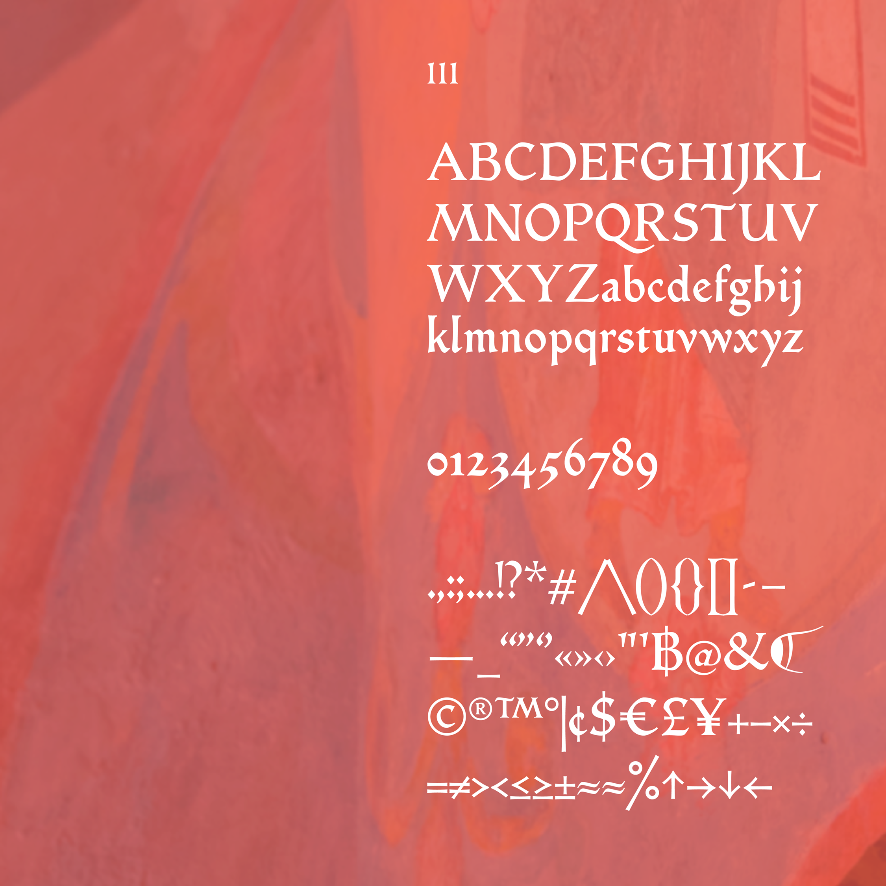
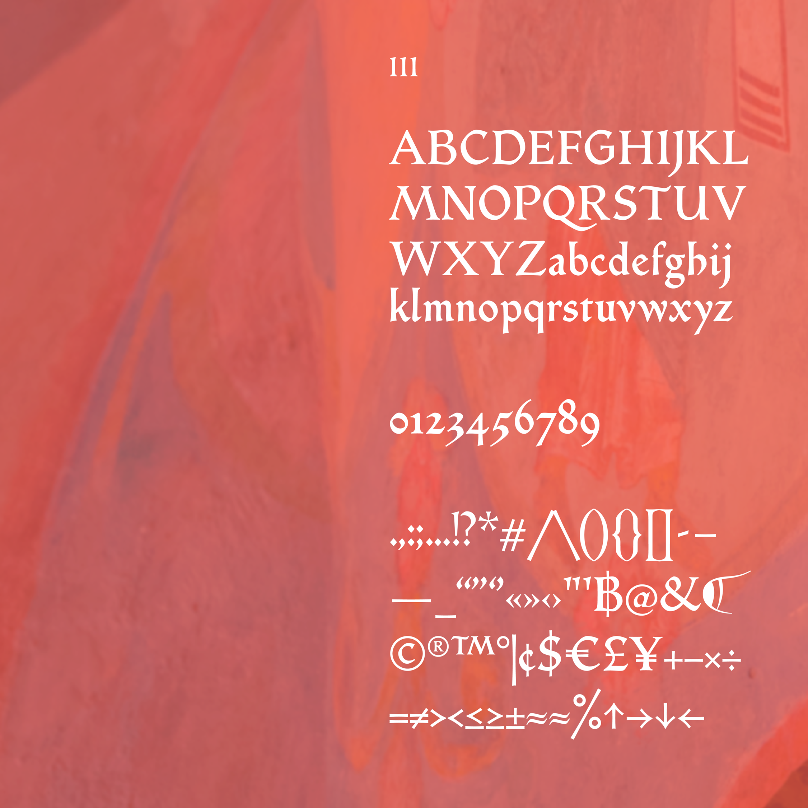
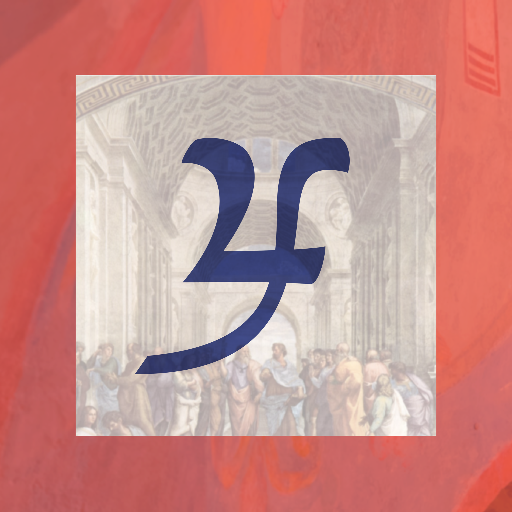
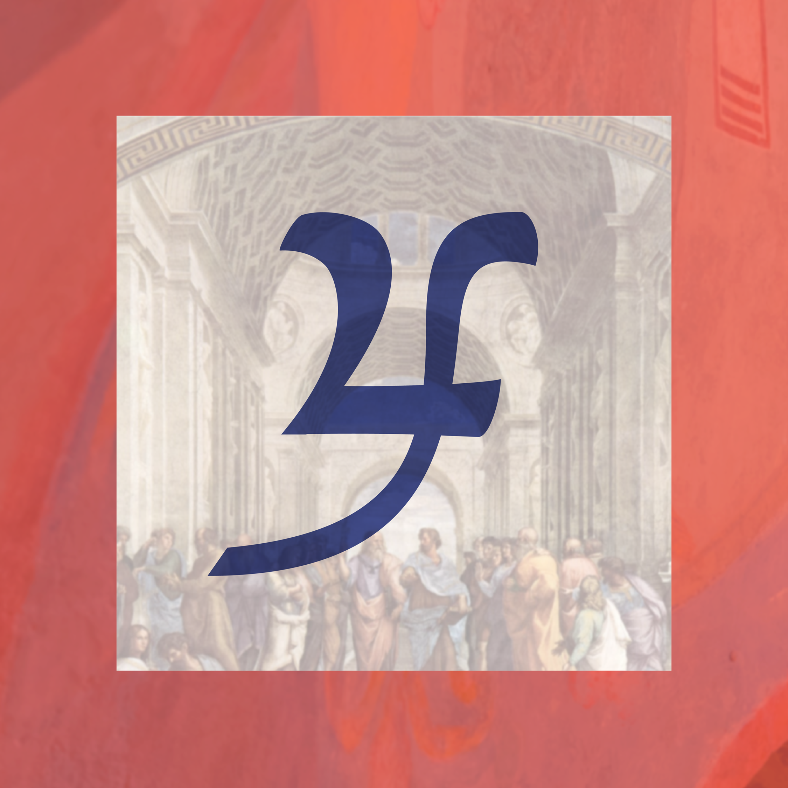
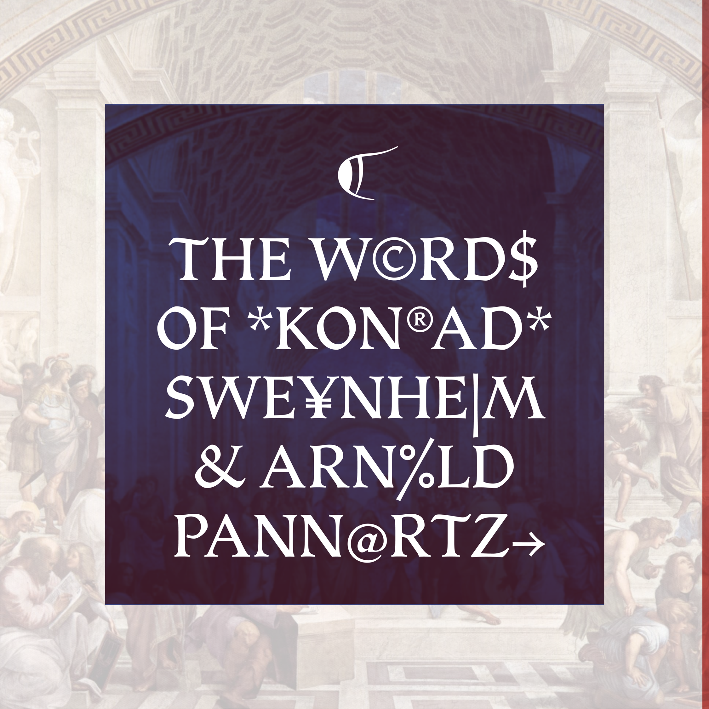
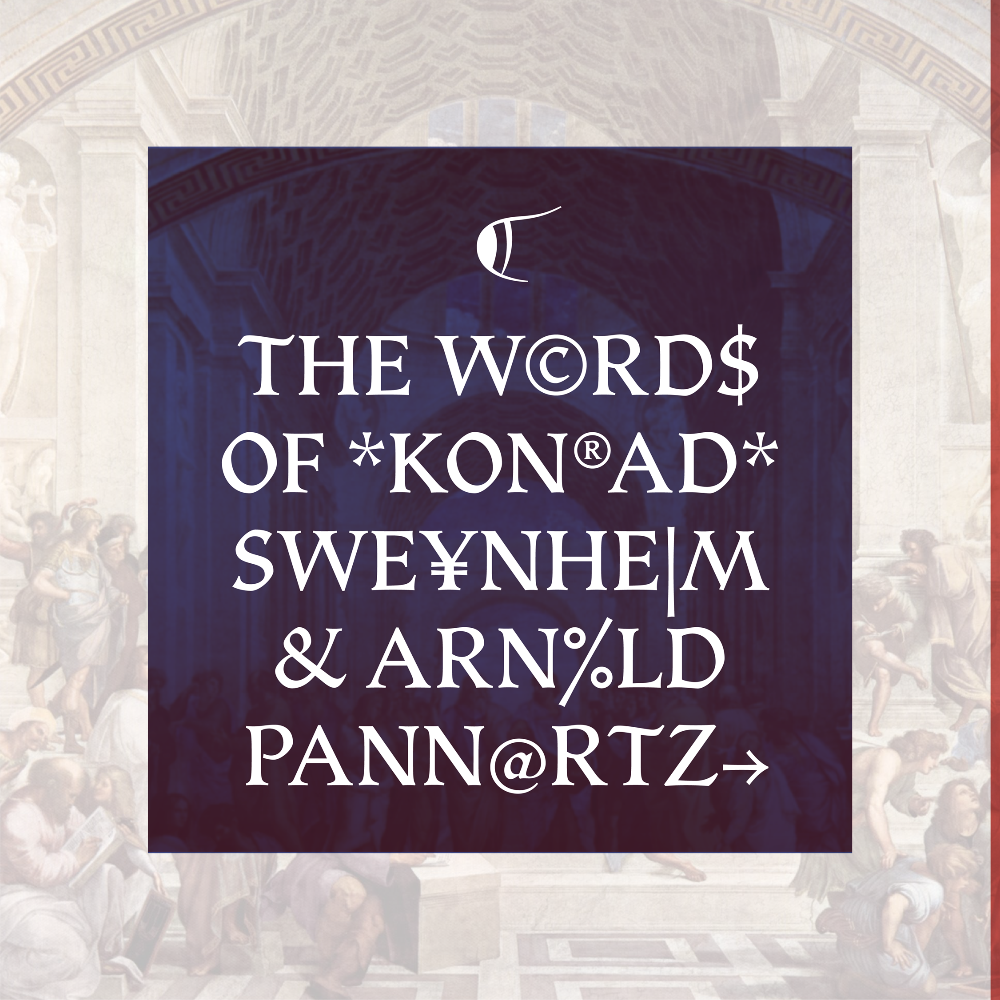

Sojourn
Avery Lee Qiu Wen
Sojourn is a typeface revival inspired by the Opera, an incunabulum printed by Italian printers Konrad Sweynheim and Arnold Pannartz in 1465. It is a proto-Roman typeface, blending Roman and Gothic characteristics. Sojourn carefully examines the letterforms created with the calligraphic pen, providing insight into the design choices made in the past and allowing us to appreciate the historical forms that have influenced contemporary type design.
Avery is a Singaporean designer, based in Singapore. Type Design intersects most of what she loves: words, culture, writing & languages. She runs a local type collective with her friends at Death of Typography and has enrolled in Type West to develop her understanding and passion for letterforms.
 

 

 
